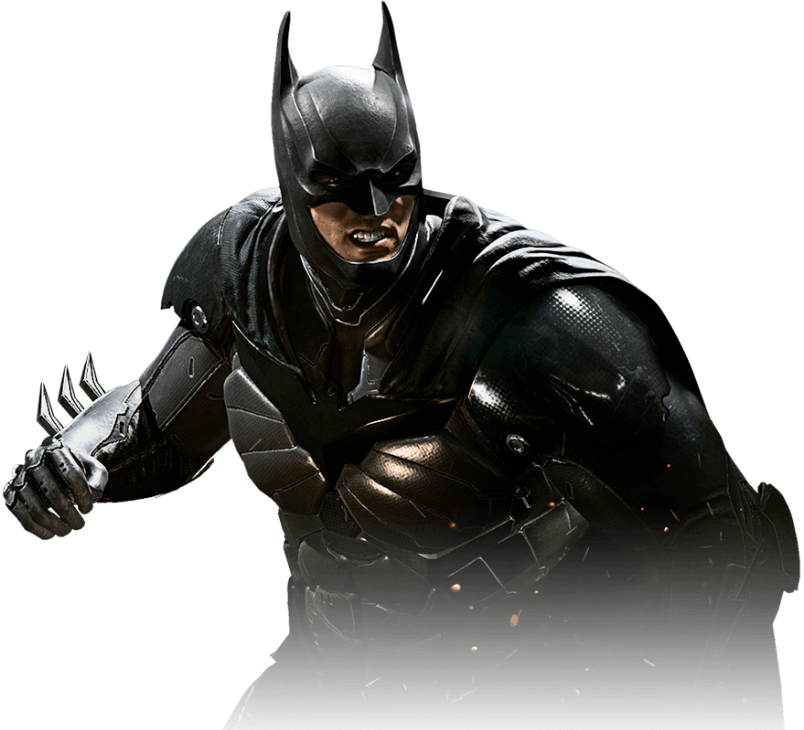
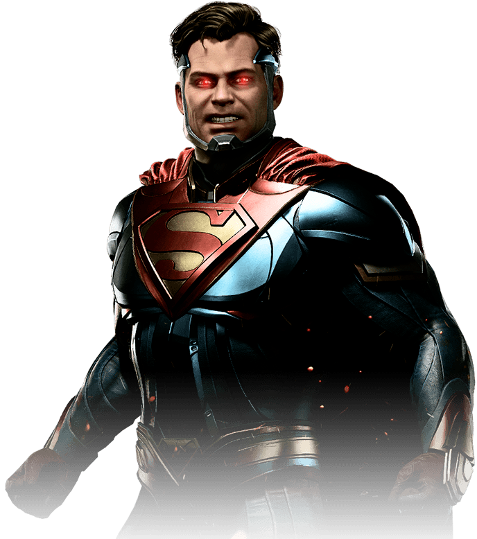
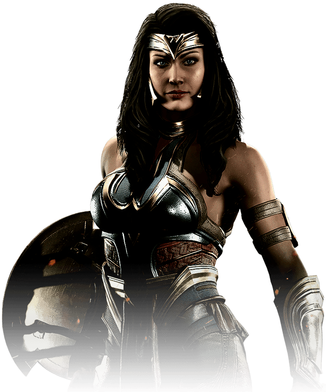

-
Batman
HP 1200
Descrição
Mesmo depois de ter sido exposto ao mundo como o Batman, Bruce Wayne mantém seu juramento de vingar a morte dos pais e lutar pela justiça. Ele se recusa a executar seus inimigos, acreditando que, se passar desse limite, não será melhor que os covardes contra os quais luta.
-
Superman
HP 3000
Descrição
Depois da queda do Regime, Superman agora é morador permanente de uma prisão construída para conter e suprimir o Homem de Aço. Ainda de luto pela perda de Lois e seu filho não nascido, Superman insiste que a paz só é possível com a subjugação. Mas com uma nova ameaça, será que velhos inimigos podem forjar novas alianças?
-
Mulher-Maravilha
HP 3000
Descrição
Irmã exilada de Temiscira, a Mulher-Maravilha permanece escondida depois da queda do Regime. Ainda uma fiel ardorosa do Superman e do Regime, a Mulher-Maravilha espera a oportunidade de contra-atacar o Batman e libertar o Superman de sua prisão.
MapaDev Week